Prerrequisitos
1092228, Ian Grabriel Cañas Fernández
Contents
Sección I - Introducción a MATLAB
Programming and scripts
Grafica una esfera de radio r.
[x,y,z] = sphere; % Esfera unitaria. r = 2; surf(x*r,y*r,z*r) % ajusta cada dimensión y grafica. axis equal % Usa una escala igual para los ejes. % Encuentra el área y volumen. A = 4*pi*r^2; V = (4/3)*pi*r^3;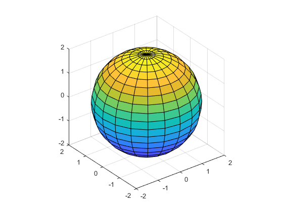
N = 100; f(1) = 1; f(2) = 1; for n = 3:N f(n) = f(n-1) + f(n-2); end f(1:10) num = randi(100) if num < 34 sz = 'low' elseif num < 67 sz = 'medium' else sz = 'high' end
ans =
1 1 2 3 5 8 13 21 34 55
num =
82
sz =
'high'
Matrices and arrays
a = [1 2 3 4] a = [1 3 5; 2 4 6; 7 8 10] z = zeros(5,1)
a =
1 2 3 4
a =
1 3 5
2 4 6
7 8 10
z =
0
0
0
0
0
a + 10 sin(a) a' p = a*inv(a) format long p = a*inv(a) format short p = a.*a a.^3
ans =
11 13 15
12 14 16
17 18 20
ans =
0.8415 0.1411 -0.9589
0.9093 -0.7568 -0.2794
0.6570 0.9894 -0.5440
ans =
1 2 7
3 4 8
5 6 10
p =
1.0000 0 0
0 1.0000 0
0 0 1.0000
p =
0.999999999999996 0 0
0 1.000000000000000 0
0 0 0.999999999999998
p =
1 9 25
4 16 36
49 64 100
ans =
1 27 125
8 64 216
343 512 1000
A = [a,a] A = [a; a]
A =
1 3 5 1 3 5
2 4 6 2 4 6
7 8 10 7 8 10
A =
1 3 5
2 4 6
7 8 10
1 3 5
2 4 6
7 8 10
sqrt(-1) c = [3+4i, 4+3j; -i, 10j]
ans = 0.0000 + 1.0000i c = 3.0000 + 4.0000i 4.0000 + 3.0000i 0.0000 - 1.0000i 0.0000 +10.0000i
Array indexing
A = [1 2 3 4; 5 6 7 8; 9 10 11 12; 13 14 15 16] A(4,2) A(8) A(4,5) = 17 A(1:3,2) A(3,:) B = 0:10:100
A =
1 2 3 4
5 6 7 8
9 10 11 12
13 14 15 16
ans =
14
ans =
14
A =
1 2 3 4 0
5 6 7 8 0
9 10 11 12 0
13 14 15 16 17
ans =
2
6
10
ans =
9 10 11 12 0
B =
0 10 20 30 40 50 60 70 80 90 100
Calling functions
A = [1 3 5];
max(A)
B = [3 6 9];
union(A,B)
maxA = max(A)
[minA,maxA] = bounds(A)
disp("hello world")
ans =
5
ans =
1 3 5 6 9
maxA =
5
minA =
1
maxA =
5
hello world
2-D and 3-D plots
x = linspace(0,2*pi); y = sin(x); plot(x,y) xlabel("x") ylabel("sin(x)") title("Plot of the Sine Function") plot(x,y,"r--") x = linspace(0,2*pi); y = sin(x); plot(x,y) hold on y2 = cos(x); plot(x,y2,":") legend("sin","cos") hold off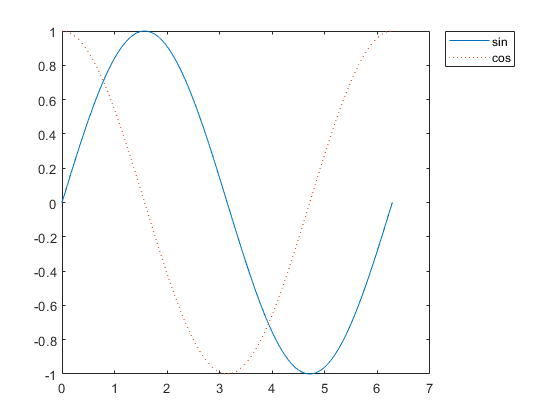
x = linspace(-2,2,20); y = x'; z = x .* exp(-x.^2 - y.^2); surf(x,y,z)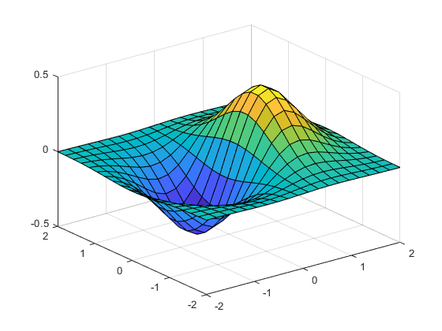
t = tiledlayout(2,2); title(t,"Trigonometric Functions") x = linspace(0,30); nexttile plot(x,sin(x)) title("Sine") nexttile plot(x,cos(x)) title("Cosine") nexttile plot(x,tan(x)) title("Tangent") nexttile plot(x,sec(x)) title("Secant")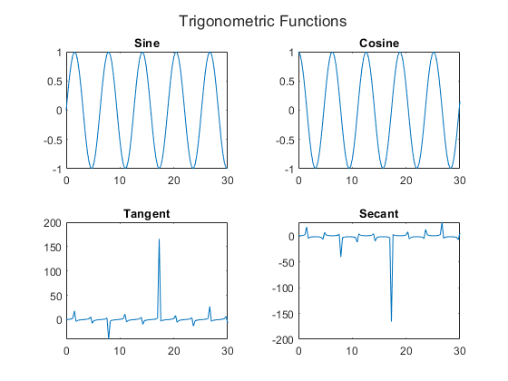
I. MANIPULANDO MATRICES.
clear clc
1) Realice las transformaciones lineales 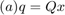 y 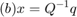, donde Comente sus observaciones.
format rational Q = [5/6 1/6 0; 5/6 0 1/6; 0 5/6 1/6] format default x = [56; 14; 0.005] q = Q*x x = inv(Q)*q
Q =
5/6 1/6 0
5/6 0 1/6
0 5/6 1/6
x =
56.0000
14.0000
0.0050
q =
49.0000
46.6675
11.6675
x =
56.0000
14.0000
0.0050
Claramente apreciamos el cumplimiento de los conceptos de álgebra lineal en cuando al producto y la matriz inversa.
2) Importe los datos de un archivo .csv, .xls o .xlsx como una matrix a su plataforma de preferencia y despliegue las primeras 15 filas y 4 columnas.
A = readmatrix('Matriz.xlsx');
A(1:15,1:4)
ans =
1.0000 1.0000 1.0000 1.0000
3.0000 2.0000 1.0000 0
2.0000 3.0000 4.0000 5.0000
4.0000 4.0000 4.0000 4.0000
3.0000 5.0000 7.0000 9.0000
5.0000 6.0000 7.0000 8.0000
5.2000 7.0000 8.8000 10.6000
5.8286 8.0000 10.1714 12.3429
6.4571 9.0000 11.5429 14.0857
7.0857 10.0000 12.9143 15.8286
7.7143 11.0000 14.2857 17.5714
8.3429 12.0000 15.6571 19.3143
8.9714 13.0000 17.0286 21.0571
9.6000 14.0000 18.4000 22.8000
10.2286 15.0000 19.7714 24.5429
3) Cree un nuevo vector columna 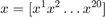 y copie allí el contenido de los últimos 20 elementos de la tercera columna de la matriz creada en el paso anterior.
X = A(end-19:end,3)
X = 41.7143 43.0857 44.4571 45.8286 47.2000 48.5714 49.9429 51.3143 52.6857 54.0571 55.4286 56.8000 58.1714 59.5429 60.9143 62.2857 63.6571 65.0286 66.4000 67.7714
4) Cree un nuevo vector fila 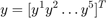 , donde cada 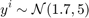 es un número aleatorio generado según la distribución Gaussiana especificada.
Y = transpose(normrnd(1.7, 5, 5, 1)) % normrnd(mu,sigma,sz) genera un array de números rándom de distribución normal, donde el vector sz especifica el tamaño de la matriz Y.
Y = 10.8694 -9.5942 6.0109 3.2938 -4.8384
*5) Genere la matriz A = xy.
A = X*Y
A = 453.4103 -400.2166 250.7390 137.3996 -201.8321 468.3169 -413.3744 258.9825 141.9169 -208.4677 483.2236 -426.5322 267.2260 146.4341 -215.1033 498.1302 -439.6901 275.4694 150.9513 -221.7389 513.0369 -452.8479 283.7129 155.4686 -228.3744 527.9435 -466.0057 291.9564 159.9858 -235.0100 542.8501 -479.1635 300.1999 164.5031 -241.6456 557.7568 -492.3213 308.4433 169.0203 -248.2812 572.6634 -505.4791 316.6868 173.5376 -254.9167 587.5701 -518.6369 324.9303 178.0548 -261.5523 602.4767 -531.7947 333.1737 182.5721 -268.1879 617.3833 -544.9525 341.4172 187.0893 -274.8235 632.2900 -558.1103 349.6607 191.6066 -281.4591 647.1966 -571.2681 357.9042 196.1238 -288.0946 662.1033 -584.4259 366.1476 200.6411 -294.7302 677.0099 -597.5837 374.3911 205.1583 -301.3658 691.9165 -610.7415 382.6346 209.6756 -308.0014 706.8232 -623.8994 390.8781 214.1928 -314.6369 721.7298 -637.0572 399.1215 218.7101 -321.2725 736.6365 -650.2150 407.3650 223.2273 -327.9081
6) Aplique un comando de reshape para convertir la matriz A en un s´olo vector columna a
a = reshape(A, [], 1)
a = 453.4103 468.3169 483.2236 498.1302 513.0369 527.9435 542.8501 557.7568 572.6634 587.5701 602.4767 617.3833 632.2900 647.1966 662.1033 677.0099 691.9165 706.8232 721.7298 736.6365 -400.2166 -413.3744 -426.5322 -439.6901 -452.8479 -466.0057 -479.1635 -492.3213 -505.4791 -518.6369 -531.7947 -544.9525 -558.1103 -571.2681 -584.4259 -597.5837 -610.7415 -623.8994 -637.0572 -650.2150 250.7390 258.9825 267.2260 275.4694 283.7129 291.9564 300.1999 308.4433 316.6868 324.9303 333.1737 341.4172 349.6607 357.9042 366.1476 374.3911 382.6346 390.8781 399.1215 407.3650 137.3996 141.9169 146.4341 150.9513 155.4686 159.9858 164.5031 169.0203 173.5376 178.0548 182.5721 187.0893 191.6066 196.1238 200.6411 205.1583 209.6756 214.1928 218.7101 223.2273 -201.8321 -208.4677 -215.1033 -221.7389 -228.3744 -235.0100 -241.6456 -248.2812 -254.9167 -261.5523 -268.1879 -274.8235 -281.4591 -288.0946 -294.7302 -301.3658 -308.0014 -314.6369 -321.2725 -327.9081
II. VECTORIZANDO OPERACIONES.
1) Compute la suma de los elementos de cada columna de la matriz A.
S = sum(A)
S =
1.0e+04 *
1.1900 -1.0504 0.6581 0.3606 -0.5297
2) Compute el promedio de los elementos de cada columna de la matriz A.
P = median(A)
P = 595.0234 -525.2158 329.0520 180.3135 -264.8701
3) Compute la varianza de los elementos de cada columna de la matriz A.
va = var(A)
va =
1.0e+03 *
7.7773 6.0595 2.3784 0.7142 1.5411
4) Compute el vector media a 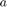$ partir de los vectores fila de la matriz A.
a = median(transpose(A))
a = Columns 1 through 7 137.3996 141.9169 146.4341 150.9513 155.4686 159.9858 164.5031 Columns 8 through 14 169.0203 173.5376 178.0548 182.5721 187.0893 191.6066 196.1238 Columns 15 through 20 200.6411 205.1583 209.6756 214.1928 218.7101 223.2273
5) Compute la distancia euclideana entre $ y cada vector fila de la matriz A.
d = pdist2(transpose(A),a,"euclidean")
d =
1.0e+03 *
1.8739
3.1880
0.6721
0
2.0116
6) Vectorice e implemente las siguientes combinaciones lineales. Asuma los valores de su preferencia para los coeficientes 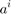, 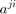 y los descriptores x^i.
za = a(1) for i = 2:5 za = za + X(i)*a(i); end za
za = 137.3996 za = 2.7018e+04
for j=1:3 zb(j) = A(j); for i = 2:5 zb(j) = zb(j) + X(i)*A(j,i); end end zb
zb = 1.0e+03 * -8.8727 -9.1644 -9.4561
III. OTRAS OPERACIONES ÚTILES.
1) Aplique una función de slicing para extraer una matriz C de tamaño 4x4 a partir de las primeras 4 filas y 4 columnas de la matriz A.
C = A(1:4,1:4)
C = 453.4103 -400.2166 250.7390 137.3996 468.3169 -413.3744 258.9825 141.9169 483.2236 -426.5322 267.2260 146.4341 498.1302 -439.6901 275.4694 150.9513
2) Compute la matriz de eigenvalues 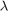 y la matriz de eigenvectors 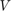 de la matriz C. Regenere a 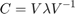
[V, lambda] = eig(C) % V = eigenvectors; lambda = eigenvalues
C = V*lambda*inv(V)
V =
-0.4762 -0.0804 -0.3194 -0.0369
-0.4919 0.4879 -0.0732 0.5101
-0.5075 0.5595 -0.0561 0.4966
-0.5232 0.6651 0.9431 0.7013
lambda =
458.2132 0 0 0
0 0.0000 0 0
0 0 -0.0000 0
0 0 0 -0.0000
C =
453.4103 -400.2166 250.7390 137.3996
468.3169 -413.3744 258.9825 141.9169
483.2236 -426.5322 267.2260 146.4341
498.1302 -439.6901 275.4694 150.9513
3) Lleve a cabo la operación de singular value decomposition sobre las matrices A y C. Regenere las matrices A y C utilizando las matrices resultantes de la descomposición.
[UA,SA,VA] = svd(A) A = UA*SA*VA
UA =
Columns 1 through 7
-0.1686 -0.9744 -0.1281 -0.0227 -0.0010 -0.0065 0.0148
-0.1742 0.0686 -0.1179 -0.2363 0.1968 -0.3298 -0.1627
-0.1797 0.0208 0.0182 -0.0678 0.1693 -0.0725 0.0645
-0.1853 0.0250 0.1653 -0.0268 -0.3400 0.1099 -0.1475
-0.1908 0.0010 0.2588 -0.0464 -0.0587 -0.0050 -0.4202
-0.1964 0.0579 -0.1730 -0.2117 0.1200 0.9058 -0.0165
-0.2019 0.0622 -0.0259 -0.1707 -0.3893 -0.0594 0.8006
-0.2074 -0.0279 0.5102 -0.2130 0.1984 -0.0092 0.0923
-0.2130 0.0523 -0.1032 0.2986 -0.1848 -0.0011 -0.0750
-0.2185 0.0283 -0.0097 0.2790 0.0965 0.0016 0.0459
-0.2241 0.0704 -0.3589 0.2821 0.0715 -0.0432 -0.0042
-0.2296 0.0465 -0.2059 -0.6316 -0.2380 -0.1548 -0.2080
-0.2352 -0.0006 0.2417 0.1124 0.3536 -0.0014 0.1565
-0.2407 0.0415 -0.1075 0.1155 0.3286 -0.0462 0.1064
-0.2463 0.0457 0.0397 0.1565 -0.1807 -0.0115 -0.0765
-0.2518 0.1184 -0.4798 0.0258 0.0253 -0.1073 -0.0708
-0.2573 0.0408 0.1976 0.0096 -0.2050 -0.0172 -0.0867
-0.2629 0.0474 0.1208 -0.1438 0.3074 -0.0655 0.0899
-0.2684 0.0589 -0.0581 -0.0070 0.0514 -0.0593 -0.0160
-0.2740 -0.0285 0.2084 0.3152 -0.3124 0.0445 -0.0871
Columns 8 through 14
0.0060 -0.0006 -0.0101 -0.0201 -0.0356 -0.0058 -0.0159
0.0837 -0.1016 -0.0876 -0.3062 -0.4272 -0.0285 -0.2471
-0.6301 0.1608 -0.0493 0.2251 -0.0089 -0.4169 -0.1425
-0.0225 -0.3635 -0.2678 -0.2012 0.2530 -0.1311 -0.0646
-0.1040 0.0319 0.2213 0.2840 -0.5327 0.2688 0.3315
0.0053 0.0236 0.0079 -0.0454 -0.1361 -0.0044 -0.0577
-0.0133 -0.0119 0.0711 0.0511 -0.2915 0.1100 0.0899
0.6429 0.1232 -0.0156 0.1560 0.0578 -0.2409 -0.0693
0.1021 0.8374 -0.1008 -0.1540 0.0278 0.0094 -0.0439
0.0216 -0.1210 0.8595 -0.1553 0.1560 -0.1092 -0.1240
0.2045 -0.1728 -0.1332 0.7373 0.0633 0.0046 -0.1250
-0.0299 0.1312 0.1902 0.1300 0.4818 0.1727 0.1125
-0.1708 -0.0140 -0.1386 -0.0607 0.2295 0.7454 -0.1767
0.0122 -0.0658 -0.1313 -0.1681 0.1368 -0.1408 0.8224
-0.0065 -0.1013 -0.0681 -0.0717 -0.0186 -0.0264 -0.0300
0.2127 -0.1164 -0.0572 -0.2222 -0.1309 0.0774 -0.0877
-0.1184 -0.0359 -0.0265 0.0242 -0.0734 -0.0532 -0.0026
-0.1626 0.0424 -0.0626 -0.0201 0.0353 -0.1818 -0.1393
-0.0159 -0.0461 -0.0589 -0.0845 -0.0378 -0.0580 -0.0837
-0.0463 -0.1355 -0.0921 -0.0460 0.0580 -0.0496 -0.0036
Columns 15 through 20
0.0054 0.0005 0.0191 0.0147 -0.0004 -0.0460
-0.0800 -0.4871 -0.0348 -0.2093 -0.2395 0.1098
-0.0054 0.2469 -0.1629 -0.3952 -0.0986 -0.0247
-0.3220 -0.0474 -0.2811 0.0227 -0.1188 -0.5078
-0.0837 0.1258 -0.2256 0.1106 0.0266 -0.1430
0.0200 -0.1026 0.0235 -0.0616 -0.0455 0.0790
-0.0501 -0.0425 -0.0943 0.0164 -0.0313 -0.0452
0.0321 0.1924 -0.0543 -0.2045 -0.0216 0.0072
-0.1178 -0.1266 -0.0695 0.0367 -0.0609 -0.1557
-0.0798 -0.0856 -0.0290 -0.0396 -0.0633 -0.1110
-0.0860 -0.2386 0.0122 0.0287 -0.0778 -0.0740
0.0593 -0.0682 -0.0172 -0.0255 -0.0184 0.1569
-0.0188 0.0342 -0.0101 -0.1597 -0.0568 -0.0445
-0.0250 -0.1188 0.0311 -0.0915 -0.0713 -0.0074
0.9049 -0.0586 -0.0867 -0.0134 -0.0571 -0.1316
-0.0512 0.7223 0.0241 0.0219 -0.0817 0.0103
-0.0721 0.0202 0.8917 -0.0572 -0.0482 -0.1097
0.0160 -0.0049 0.0018 0.8335 -0.0607 0.0399
-0.0403 -0.0918 -0.0266 -0.0652 0.9349 -0.0280
-0.1352 0.0096 -0.1362 0.0060 -0.0467 0.7734
SA =
1.0e+03 *
4.1434 0 0 0 0
0 0.0000 0 0 0
0 0 0.0000 0 0
0 0 0 0.0000 0
0 0 0 0 0.0000
0 0 0 0 0
0 0 0 0 0
0 0 0 0 0
0 0 0 0 0
0 0 0 0 0
0 0 0 0 0
0 0 0 0 0
0 0 0 0 0
0 0 0 0 0
0 0 0 0 0
0 0 0 0 0
0 0 0 0 0
0 0 0 0 0
0 0 0 0 0
0 0 0 0 0
VA =
-0.6489 0.3918 -0.6444 0.0202 -0.0988
0.5728 0.1724 -0.4878 -0.6353 -0.0264
-0.3588 0.3682 0.5374 -0.6437 0.1804
-0.1966 -0.5141 -0.2397 -0.1653 0.7825
0.2889 0.6457 0.0240 0.3929 0.5871
A =
453.4103 -273.7560 450.2782 -14.0833 69.0440
468.3169 -282.7562 465.0819 -14.5463 71.3140
483.2236 -291.7564 479.8856 -15.0093 73.5839
498.1302 -300.7566 494.6893 -15.4723 75.8539
513.0369 -309.7568 509.4929 -15.9353 78.1238
527.9435 -318.7570 524.2966 -16.3983 80.3938
542.8501 -327.7572 539.1003 -16.8614 82.6637
557.7568 -336.7574 553.9039 -17.3244 84.9336
572.6634 -345.7576 568.7076 -17.7874 87.2036
587.5701 -354.7578 583.5113 -18.2504 89.4735
602.4767 -363.7580 598.3149 -18.7134 91.7435
617.3833 -372.7582 613.1186 -19.1764 94.0134
632.2900 -381.7584 627.9223 -19.6394 96.2833
647.1966 -390.7586 642.7259 -20.1024 98.5533
662.1033 -399.7587 657.5296 -20.5655 100.8232
677.0099 -408.7589 672.3333 -21.0285 103.0932
691.9165 -417.7591 687.1369 -21.4915 105.3631
706.8232 -426.7593 701.9406 -21.9545 107.6331
721.7298 -435.7595 716.7443 -22.4175 109.9030
736.6365 -444.7597 731.5479 -22.8805 112.1729
[UC,SC,VC] = svd(C) C = UC*SC*VC
UC =
-0.4762 0.8504 -0.1798 0.1329
-0.4919 -0.1553 0.7982 0.3113
-0.5075 -0.1543 -0.0122 -0.8476
-0.5232 -0.4784 -0.5749 0.4086
SC =
1.0e+03 *
1.4048 0 0 0
0 0.0000 0 0
0 0 0.0000 0
0 0 0 0.0000
VC =
-0.6778 0.5930 -0.3307 0.2821
0.5983 0.2139 -0.7671 0.0886
-0.3748 -0.7726 -0.4906 0.1483
-0.2054 0.0759 -0.2480 -0.9437
C =
453.4103 -396.6949 221.2153 -188.7299
468.3169 -409.7369 228.4882 -194.9347
483.2236 -422.7790 235.7610 -201.1395
498.1302 -435.8210 243.0338 -207.3444